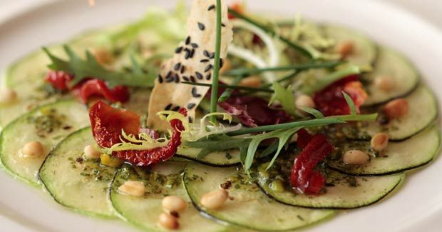

Carpaccio de Verduras
El carpaccio vegetariano es un plato de entrada muy fresco, ideal para esas personas que no quieren o no pueden consumir proteínas animales. En esta receta, se sustituye la carne por una verdura, siendo un plato muy ligero y fácil de digerir.
Ingredientes:
- • 2 berenjenas pequeñas
- • 2 zapallitos italianos pequeños
- • 1/2 pimentón amarillo
- • 1/2 taza de jugo de limón
- • Alcaparras al gusto
Preparación:
- Cortar los zapallitos y las berenjenas en redondelas muy delgadas.
- Cortar el pimentón en tiritas delgadas.
- Poner en un plato intercalando los zapallitos y las berenjenas y sobre esto poner las tiritas de pimentón.
- Aliñar esta preparación con el jugo de limón, Repartir sobre ésta las alcaparras
- Dejar macerar un rato hasta que se impregnen las verduras y servir frío.